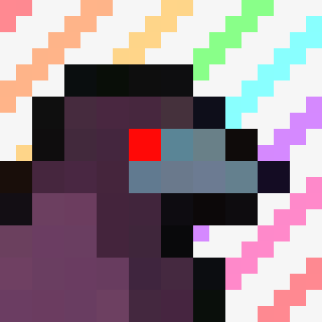

Welcome to the main index page for
AnthonyFic-code
!
Pages:
Tetr.JS
What am I doing
The over-blocker
Random other things:
Credits
Advertisement for a club
This thing, on witheringwillow.github.io
inheritance
ProjectEuler answer hider script (for TamperMonkey)
Original tetrjs